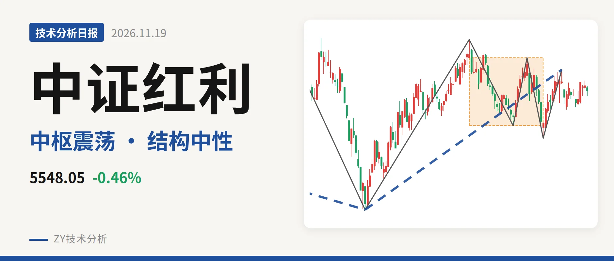
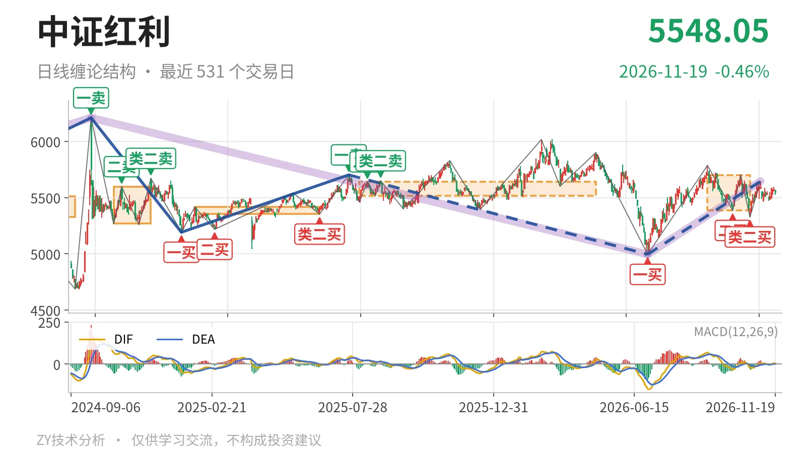
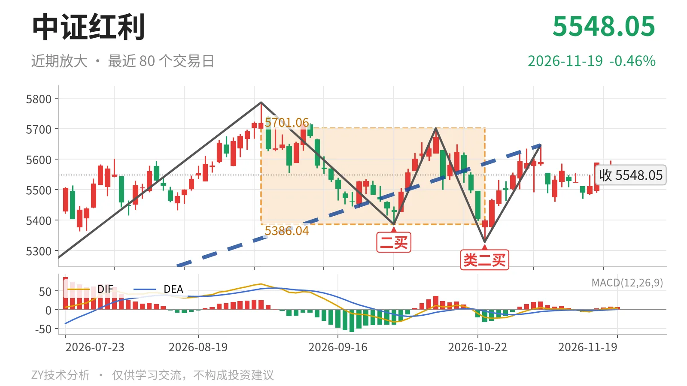

中证红利｜日线中枢中轴5548点待选择

最近日线中枢 5386.04—5701.06点，收盘位于中枢之内
一句话：日线在最新中枢中轴附近整理，上涨线段未结束但力度弱。
📊 走势结构：大级别下跌未结束，日线上涨段仍在延续
更大级别上，2024年10月8日至2026年6月30日的下跌走势从6209.67点落到4995.49点，跌约19.6%，没有结束；6月30日至11月4日的上涨走势涨约13.0%，属于这段下跌里的修复段，也还在延续。日线线段看，6月30日至11月4日上涨线段从4995.49点走到5646.01点，目前没有结束，是当前主导线段。因此，日线只能定义为下跌段之后的修复段，不是单边上涨。

📍 中枢与位置：收在中枢中轴上方，中枢中轴略下移
最近日线笔中枢为9月1日至10月23日的5386.04—5701.06点，中轴5543.55点。最新收盘5548.05点落在该中枢之内，距中轴约4.5点，距上沿153点、下沿162点。相比2025年8月4日至2026年4月30日的中枢中轴5579.23点，最近中枢中轴下移约36点，区间波动拉大，但没有形成中枢上移。价格未脱离中枢，仍属日线中枢震荡。
🔁 买卖点：三个买点未降级，类二买位置更低
6月30日一买4995.49点、9月29日二买5386.04点、10月23日类二买5328.30点，三者都在6月30日以来的上涨线段内。当前收盘5548.05点没有跌破10月23日低点，也没有跌破9月29日二买，所以这些买点尚未降级，仍对应日线笔级别。只是10月23日类二买5328.30点低于9月29日二买5386.04点，买点一个比一个低，说明上涨线段里的回落有反复。6月30日之后未出现反向线段，一买作为线段起点的结构含义还在。

⚡ 背驰：9月下跌与10月下跌构成“新低不新弱”
比较9月1日至9月29日下跌笔和10月14日至10月23日下跌笔：前者绿柱面积561，DIF低点-32.7；后者绿柱面积53，DIF低点-20.4。后者价格低点从5386.04点下移到5328.30点，但绿柱面积大幅缩小，DIF低点抬高，属于“新低不新弱”。这一背驰对应10月23日类二买，之后价格拉回中枢内。11月5日至19日的未成笔回落最低5460.31点，没有跌破5328.30点，背驰结构还在延续。
🧭 关键位置：5701点与5386点决定下一步结构
上方看5701点附近，这是最近日线中枢上沿；若向上离开后回抽不破5701点，中枢上移概率增加。下方看5386点一线，这是中枢下沿，也是9月29日二买位置；若跌破后反抽回不到5386点上方，结构上构成三卖。当前收盘在5548点附近，位于中枢中轴上方但未远离，结构偏中性。重新回到5701点上方，日线结构偏强；跌破5386点且反抽不回，日线转弱。
⚠️ 本文为基于公开行情数据的缠论技术结构记录，由程序自动计算并生成，仅供学习交流，不构成任何投资建议。市场有风险，投资需谨慎。